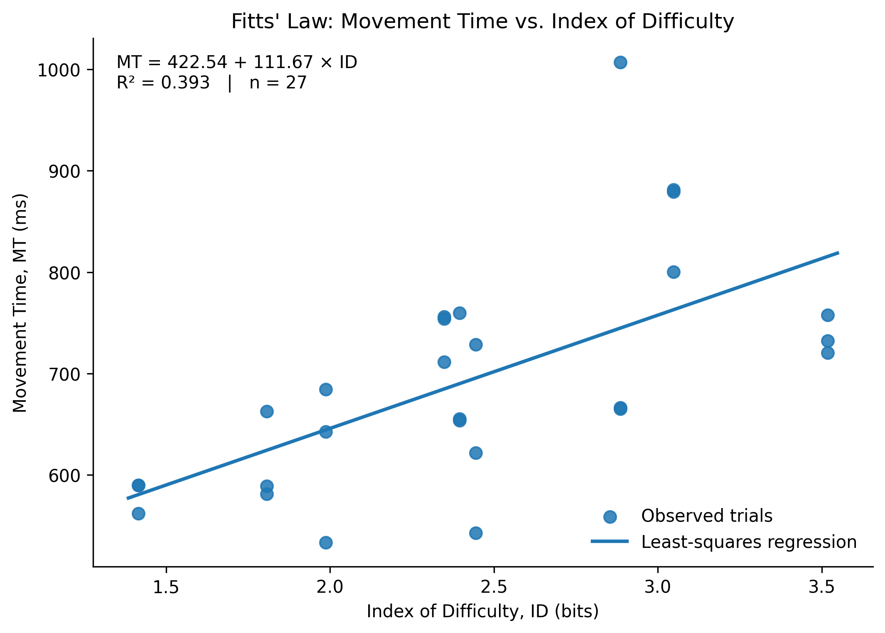

This single GitHub Pages link contains the experiment, participant recording, analysis, and custom Fitts' Law formula.
This experiment simulates a supermarket checkout operation in which a cashier uses a POS interface while processing a customer's purchase. The task focuses on operating on-screen function buttons such as next step, membership/points, promotion, cancellation, credit card, electronic payment, and cash. The experiment examines how target size and target distance affect movement time.
The experiment combines a realistic supermarket POS visual context with a controlled Fitts' Law manipulation. Target distance (A) and target width (W) are varied across 3 levels each, with 3 repetitions per A × W combination, producing 27 controlled trials. This preserves the real-world checkout context while keeping the pointing task experimentally measurable.
The application is intended to support interface design for fast checkout operations. The real-world HCI problem is that frequently used POS controls need to be sized and placed so operators can reach them efficiently while maintaining reliable interaction. Movement-time data provide an empirical basis for evaluating target size and target distance in this context.
A supermarket checkout was chosen because cashiers repeatedly interact with digital controls under time pressure. The design keeps the core experimental task as a single pointing task rather than adding simultaneous scanning or conversation, so that the effects of target distance and target width can be measured more directly.
The original experiment is embedded below so the root GitHub Pages URL can be used as the single submission link.
The formal trial session was screen-recorded during data collection.
The formal dataset contains 27 trials. A least-squares linear regression was performed with Movement Time (MT) as the dependent variable and Index of Difficulty (ID) as the predictor.
| Statistic | Value |
|---|---|
| a (intercept) | 422.54 ms |
| b (slope) | 111.67 ms/bit |
| R² | 0.393 |
| Trials (n) | 27 |
| Total errors | 0 |

MT = 422.54 + 111.67 × ID
The empirically derived parameters are a = 422.54 ms and b = 111.67 ms/bit.